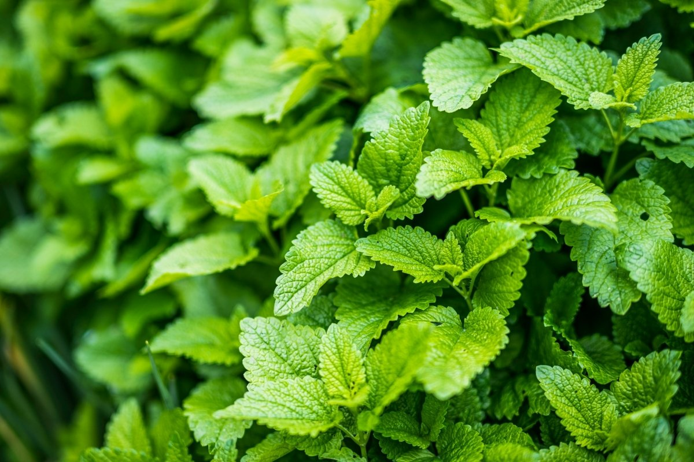

MENTA

La menta, cuyo nombre científico es Mentha piperita L, es una planta muy popular cuya principal característica es la sensación de frescura que provoca en el paladar con su consumo y a la que la industria alimentaria ha recurrido desde tiempos inmemoriales.